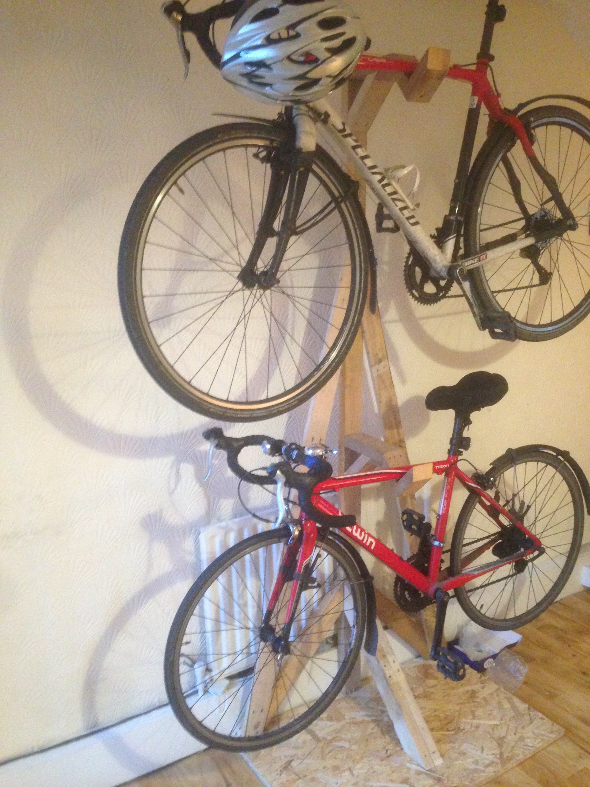

Building a bicycle stand 22-02-17
I've decided that some of my posts should document useful things I've built, hopefully making
building them in the future a little easier. I am starting with our bicycle stand.
Our bikes have long been resting against the wall in our house in Dublin. A couple of weeks ago, I
finally got round to building a stand-a-lone bicycle stand. It is made from wood found in local
skips. Here are my plans:

And here it is in action! It flexes a little with the load but seems pretty sturdy.
